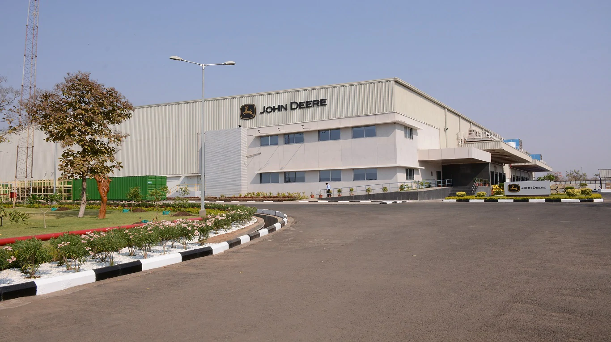

All John Deere genuine parts are designed and manufactured with
strict factory standards in order to
keep your John Deere machinery operating at peak performance year
after year.
Ensuring Parts availability to our dealers and customers on time, every time.

Our parts are repeatedly tested before
they go into the market.
John Deere only delivers high quality
parts and by using them,
your John Deere will always be at it's best.
A comprehensive range of John Deere genuine
parts can be accessed via our national
dealer network. Our dealers stock a variety
of consumable and off-the-shelf parts in
order to provide John Deere customers with a
superior level of service and support.
For safety, reliability, efficiency and warranty,
always choose John Deere genuine spare parts.
India Parts Distribution Center (PDC), has capacity to ship around 3000 lines/day and is equipped with latest warehouse management systems and processes (A "line," or "line item," is the term for a single order that is shipped as a unit, regardless of the actual quantity. It may be one tractor hood, or a hundred cap screws).
The location of the Parts Distribution Center is at Nagpur which is at the center of India and which makes it one of the best locations for the mother warehouse. Emergency / Machine-down orders entered by 3 pm (Monday through Saturday) by a John Deere Dealer are shipped the same day from Nagpur PDC.
We are delivering emergency orders within 48 hours to 72 hours to majority of locations across India
Parts Available :
Engineered for Excellence
Parts and components that ensure maximum performance, value, and peace of mind
Tractor Seats
Silencer
Linkage Parts
Brake Plates
Hub
Pto Pulley
Shafts
Services
John Deere and its dealers are committed
to providing quality service to meet
your needs.
At John Deere, we offer our services and support through our
authorised countrywide dealership network. We strive to
always put customers as our top priority and provide
excellent services.
All our service technicians are factory trained and draw upon
years of industry experience. They are regularly trained to
assure speed of delivery and quality to minimize any effect on
customer's business.
At John Deere, we strive to be No.1 in achieving customer satisfaction.
John Deere offers free services only during the warranty period for all its products.
The services to be availed within the specified hours or days from the date of sale
of machine whichever occurs first.
It is mandatory to avail all free and paid services as per the given schedule.
The services can be availed only at our John Deere authorized dealership center.
For the free service, the labour cost for doing periodic maintenance is free.
Cost of oil, gaskets and other jobs requested by customer which
are not covered in the periodic maintenance schedule are chargeable.
If your machine meets with an accident during the free services period, then the cost for
the actual labour and parts has to be borne entirely by the customer.